Снято 19 августа
Shuffle и repeat
Зацикливание и повтор — не целевые действия: заброс и так случаен. Их место в нижнем ряду заняли ♥ и очередь.
ATLAS — концепт мобильного приложения, где музыку не выбирают: в неё забрасывает. Глобус задаёт место, шкала лет — время, а заброс переносит в случайную точку мира и случайную эпоху.
Моя роль: продуктовый и интерактивный дизайн от начала до конца и работающий прототип, собранный с ИИ-агентами.
У Radiooooo та же идея — место и время. Но клик по стране молча кладёт её в маршрут, а плеер продолжает играть прежнее: ткнул в место, а слышишь не его.
Здесь связь прямая: глобус задаёт место, шкала лет — время, заброс — оба разом. Первый звук — одно касание ▶, дальше любой поворот планеты или шкалы сразу меняет трек.
220 из 430 пар «место × эпоха» пустые — 51%. В 1930-е звучат 18 мест из 43, в 1970-е — 34, сейчас — 31.
Самое трудное решение проекта. Первая версия фильтровала в обе стороны: выбираешь город — и годы, где у него нет музыки, гаснут. При половине пустых пар гасла бо́льшая часть шкалы, и продукт читался так, будто с тобой спорит.
Теперь шкала крутится всегда, а город, которому в этой декаде нечего играть, уходит с глобуса — и планета доворачивает к ближайшему живому. Мир перестраивается под время, а не наоборот. Все 220 пустых пар проверены прогоном: везде место уступает живому, тишины нет.
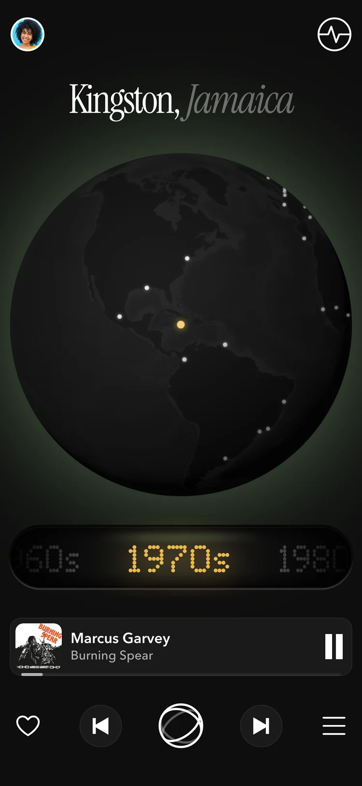
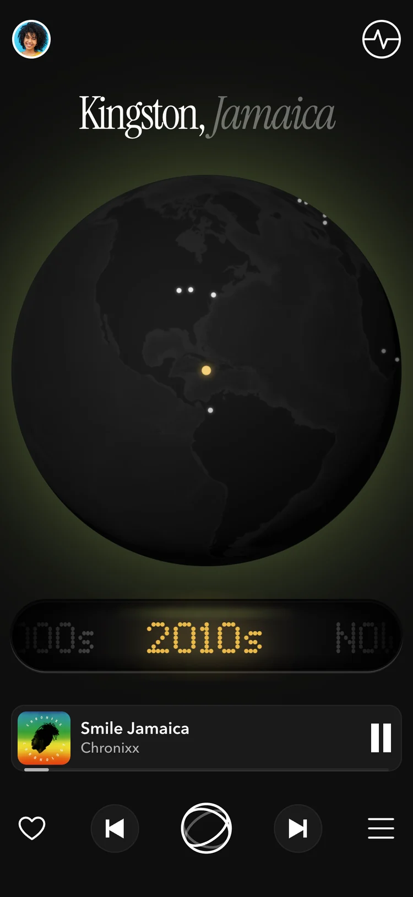
Интервью не было, но был первый человек, увидевший экран со стороны. Он принял шкалу лет за кнопку: стеклянная капсула была ровно по размеру одного года, а выделенный элемент читается кнопкой.
Капсулу заменил барабан: корпус охватывает весь механизм, годы едут внутри, и шкалу хочется крутить.
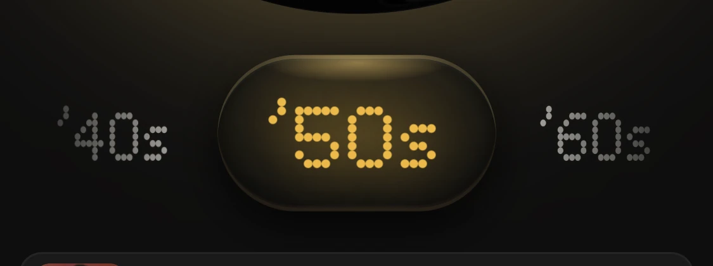
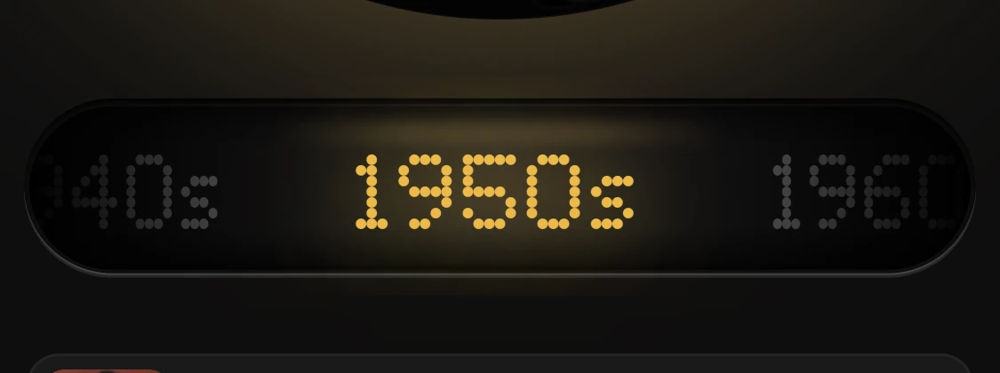
Каждый отказ записан в журнал вместе с причиной. Четыре главных — по порядку.
Снято 19 августа
Зацикливание и повтор — не целевые действия: заброс и так случаен. Их место в нижнем ряду заняли ♥ и очередь.
Снято 25 августа
Там, где архив пуст, продукт говорил об этом и играл атмосферу места. Правило времени сделало это состояние недостижимым, а механика, до которой не дойти, — уже не фича. Ушла вместе с экраном.
Снято 26 августа
Июньский бриф называл AI-курацию сердцем проекта. Её не построили — и продукт не пострадал: отличие дали заброс и физика. Текстовый запрос — ровно тот выбор, от которого продукт уходит.
Снято 29 августа
Знаком заброса бо́льшую часть проекта была кость. Но кость показывает результат, а у заброса его нет — знак стал шаром с двумя кольцами, который каждый раз ложится в новой позе.
Разброс оттенка между треками: 38 из 255 → 61.
Каждый трек светится своим оттенком, и ведёт его пара «место + жанр». На каноничной насыщенности разница между треками была 38 из 255 — глазом почти не читалась. Замерили варианты, подняли насыщенность и долю места до 60% — разброс 61, в 1,6 раза больше.
Сама система — на двух уровнях. Структура: одна шапка, одна верхняя линия и один ряд управления на всех экранах. Элементы: только токены канона — аудит нашёл 13 разных кеглей и три разных play, остались шкала и один play.
Доступность — рамка, а не полировка: текст не меньше 13 px, тач-зона не меньше 44 px, движение уважает настройку «уменьшить движение».
Экран один, остальное открывается шторками поверх и сценарий не рвёт. Находки копятся коллекцией — списком и местами.
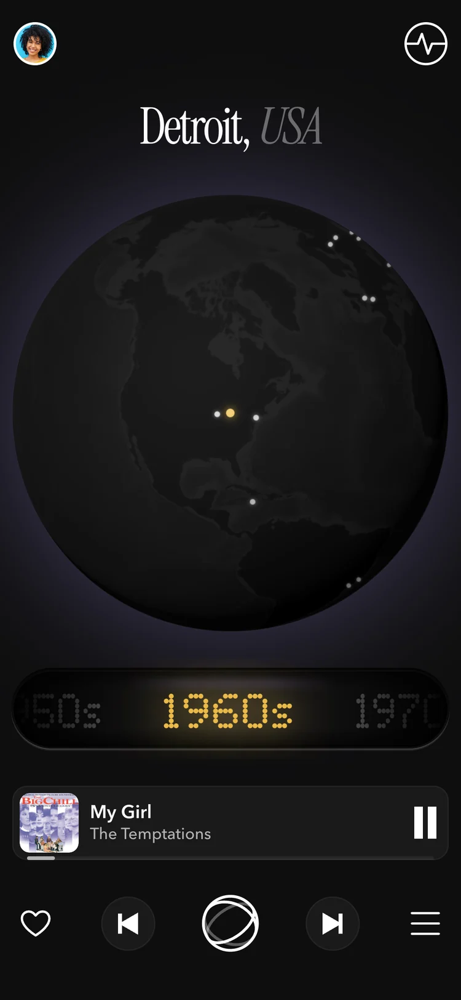
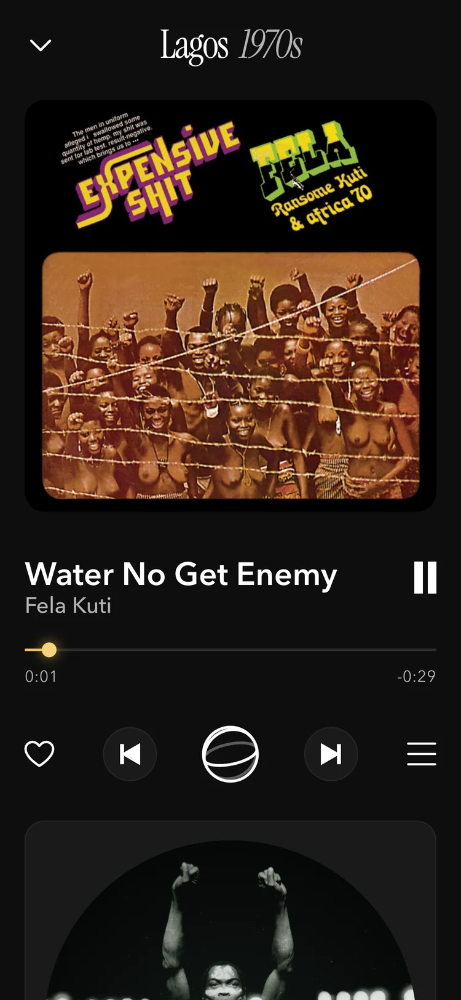
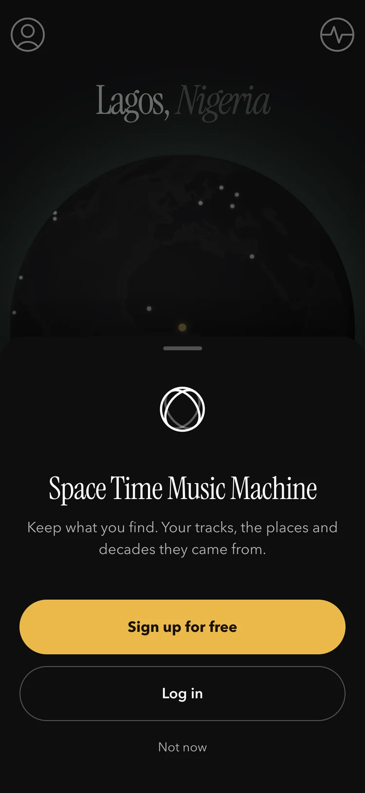
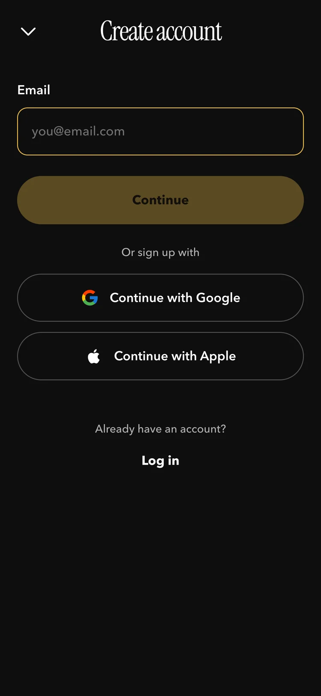
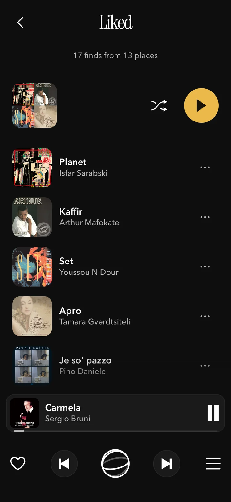
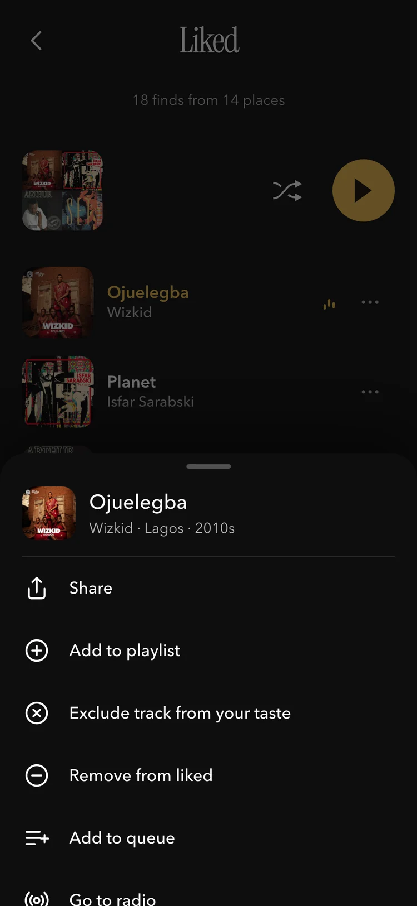
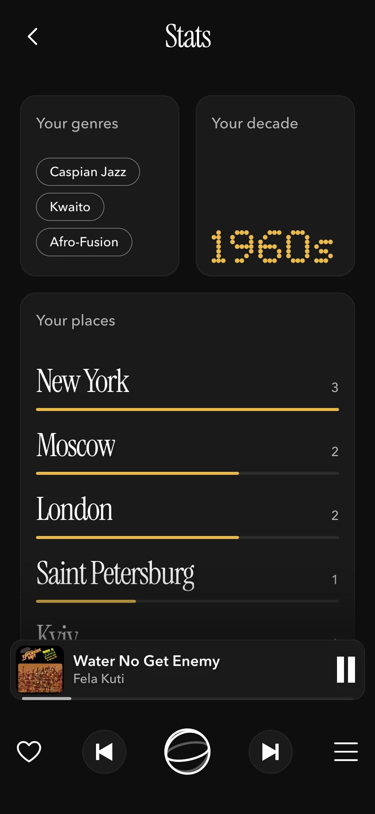
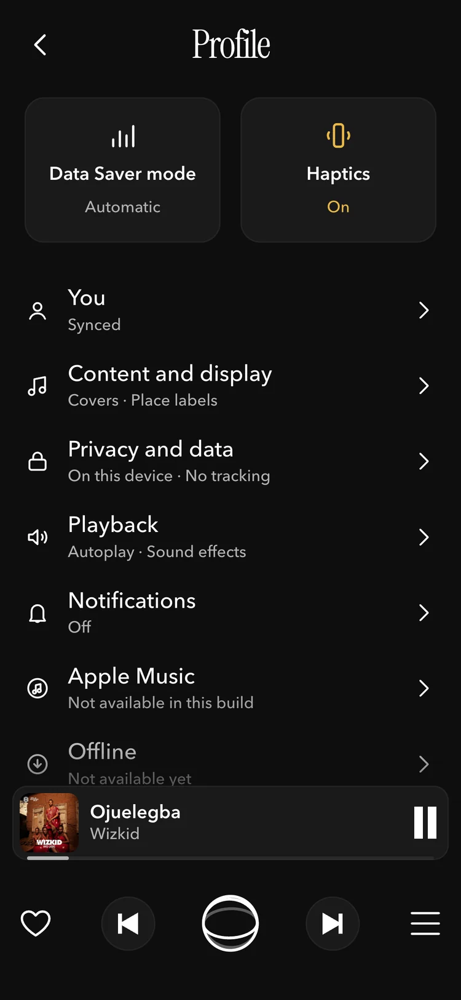
Гость ничего не копит: ♥ и кнопка списка поднимают окно входа. После входа выполняется то, ради чего человек пришёл, — находка, из-за которой он нажал ♥, уже в списке.
Бэкенда нет: профиль живёт на телефоне, почта подойдёт любая. Чтобы экраны находок и статистики не были пустыми, вход подтягивает демо-коллекцию — как будто профиль уже был.
Атлас — не одна карта, а собрание карт: каждая пара «место × время» — отдельный лист. Имя короткое и одинаково читается по-русски и по-английски.
Дефект у имени есть, и он записан: в нём только место. Кандидаты с обеими осями — Elsewhen, Skywave, Strata, Palimpsest — не прошли. Знак унаследовал тот же дефект: шар с орбитой — тоже про место. Меняем одно — пересматриваем оба.
Бренд держится и на том, чего продукт о себе не говорит.
Не обещаем
Играют 30-секундные превью Apple, каталог — мок из 630 треков.
Не обещаем
AI выведен из ядра, ничего такого не построено.
Не обещаем
Звук и портреты артистов грузятся из сети.
Не обещаем
Ни слушателей, ни рейтингов, ни отзывов.
Пользователей у прототипа пока нет, поэтому здесь не выводы, а ставки. У каждой записано, что её опровергнет, а пороги фиксируются до первого участника — после это была бы подгонка. Персон тоже нет: без интервью это утверждение о людях, которых не видел.
Порядок — по тому, что сломается, если ставка неверна, и насколько дёшево это проверить. Сценарий теста готов, режим теста встроен в сам прототип.
01 · не проверено
Меряем: что человек называет до первого касания. Опровергнет: большинство не называет шкалу или глобус тем, что крутят. Единственный живой сигнал уже был отказом — шкалу прочитали кнопкой.
02 · не проверено
Меряем: время от первого экрана до звука и число действий. Опровергнет: дольше, чем у Radiooooo, или люди ищут меню.
03 · не проверено
Меряем: одна и та же задача в двух продуктах — успех, время, ошибки. Опровергнет: в ATLAS не лучше.
04 · не проверено
Меряем: интервью о том, как человек слушал раньше. Опровергнет: большинству выбирать нравится.
05 · не проверено
Меряем: сохраняют ли без просьбы. Одной сессией это честно не проверить — нужны повторные.
FAQ
Отдельным приложением ATLAS упирается в лицензии: чтобы играть полные треки, нужны права на каталог. Поэтому реалистичная модель — не своё приложение, а механика внутри стримингового сервиса: «Каталог ваш. Дверь наша». Сервис уже платит за музыку, а получает новый повод её открыть — и та же главная метрика, возвращаемость.
Сначала код: прототип — источник правды, Figma догоняет. Код писали Claude Code и Codex, задачи и приёмка по замерам — мои. Каждое решение записано в журнал: 2929 строк и 55 снапшотов.
Каталог вырос с 13 городов до 43 и с 94 треков до 630, а интерфейс не перестраивали. Десктоп собран на том же ядре: каталог, физика шкалы и звук — из общего кода, а знак заброса и 3D-глобус пока продублированы и следующие на вынос.
Сначала тест на людях — он решает судьбу ставок выше. Потом довести десктоп: правая панель пока заглушка, а знак заброса и 3D-глобус — вынести в общее ядро. Потом натив — ради настоящей хаптики, которой нет в iOS Safari.
Концепт, собранный и живой. 43 города, 10 десятилетий, 630 треков: мок-каталог с настоящими артистами, звук — 30-секундные превью Apple, бэкенда и лицензии нет. Исследование пока гипотеза, и страница так и говорит.